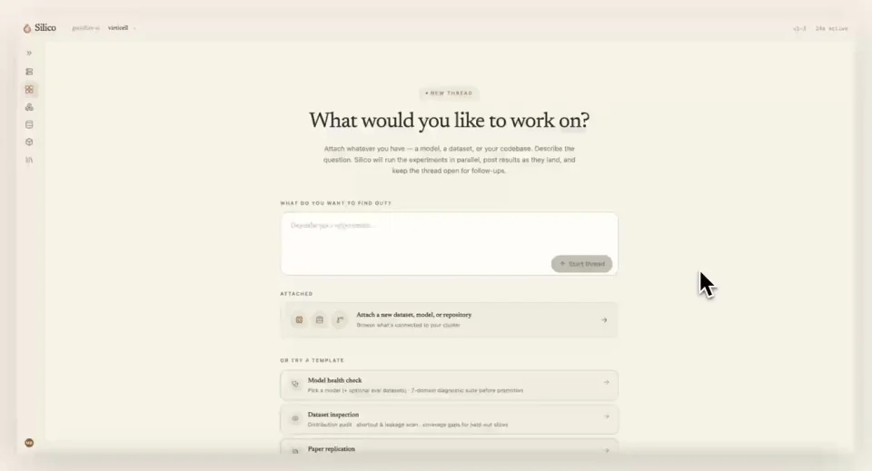
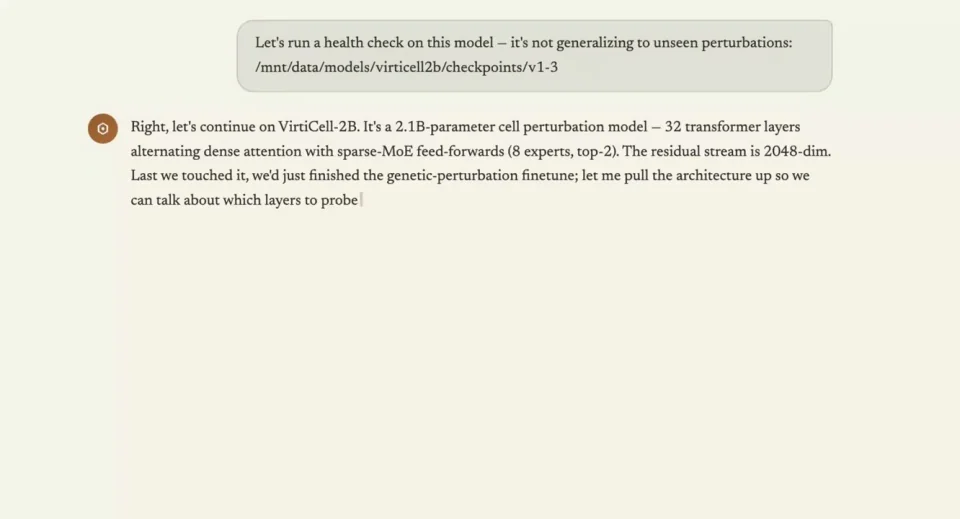
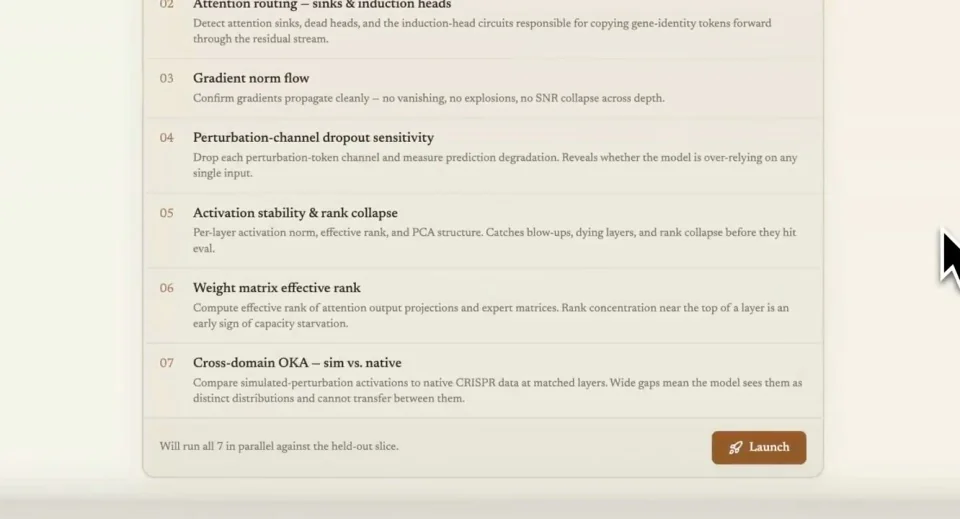
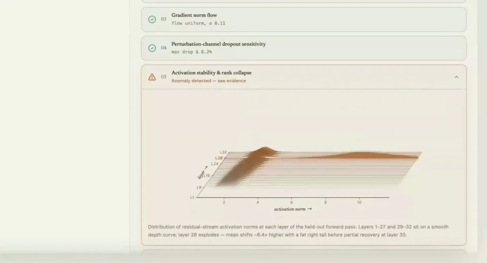

Goodfire / V189
Goodfire — Understand and debug your AI model
把模型检查做成可跟随的研究过程：先明确对象和数据集，再确认检查计划，最后给出发现及下一步实验。
构图与编排 可播放 · 可替换内容
整体编排规则示例
查看 HTML 源码
<!doctype html><html lang="zh-CN"><meta charset="utf-8"><meta name="viewport" content="width=device-width,initial-scale=1"><title>Goodfire — Understand and debug your AI model · sequence</title><style>html,body{margin:0;width:100%;height:100%;overflow:hidden;background:#eee9dc}canvas{display:block;width:100%;height:100%;object-fit:contain}</style><body data-mode="sequence"><canvas width="1000" height="600"></canvas><script src="data.js"></script><script src="common.js"></script><script src="scene.js"></script><script src="bridge.js"></script></body></html>画面元素需求输入模型附件层叠结构数据集卡检查清单进度条发现图后续按钮
MOTION LANGUAGE
动作与构图
局部动作 · 构图规则
01
输入同时说明任务与对象
奶油色纸面上放一句衬线提问，用户输入检查目标并附模型路径。回答后将模型表现为棕色层叠结构，层数与名称贴近对象。
02
启动前留出数据与计划确认
启动前留出数据与计划确认规则示例
查看 HTML 源码
<!doctype html><html lang="zh-CN"><meta charset="utf-8"><meta name="viewport" content="width=device-width,initial-scale=1"><title>Goodfire — Understand and debug your AI model · sequence</title><style>html,body{margin:0;width:100%;height:100%;overflow:hidden;background:#eee9dc}canvas{display:block;width:100%;height:100%;object-fit:contain}</style><body data-mode="clip" data-start="16" data-end="24"><canvas width="1000" height="600"></canvas><script src="data.js"></script><script src="common.js"></script><script src="scene.js"></script><script src="bridge.js"></script></body></html>数据集卡先出现，用户确认后再列检查清单。七项检查对齐成列，启动按钮靠近清单底部；不要越过确认直接播放结果。
03
运行状态留在同一列表里
运行状态留在同一列表里规则示例
查看 HTML 源码
<!doctype html><html lang="zh-CN"><meta charset="utf-8"><meta name="viewport" content="width=device-width,initial-scale=1"><title>Goodfire — Understand and debug your AI model · sequence</title><style>html,body{margin:0;width:100%;height:100%;overflow:hidden;background:#eee9dc}canvas{display:block;width:100%;height:100%;object-fit:contain}</style><body data-mode="clip" data-start="25" data-end="33"><canvas width="1000" height="600"></canvas><script src="data.js"></script><script src="common.js"></script><script src="scene.js"></script><script src="bridge.js"></script></body></html>待执行、进行中与完成依次替换，进度条只作用于当前项目。完成后把发现展开为图与短结论，不在整个页面同时跳出多个警告。
04
结论连接下一次实验
用一个主要发现、一段解释和一个后续操作收尾。更换科学任务时重写数据集、检查项与发现，不把演示数值当作真实评估结论。
SEQUENCE
段落与节奏
点击段落，定位到上方编排示意。




画面参考 · 离散静帧
KEEP THE RELATIONSHIPS
制作其他主题
- 替换模型、数据集、检查项和后续实验；保留确认与检查的顺序。
制作约束
需求输入 / 模型附件 / 层叠结构 / 数据集卡 / 检查清单 / 进度条 / 发现图 / 后续按钮
- 奶油色纸面上放一句衬线提问，用户输入检查目标并附模型路径。回答后将模型表现为棕色层叠结构，层数与名称贴近对象。
- 数据集卡先出现，用户确认后再列检查清单。七项检查对齐成列，启动按钮靠近清单底部；不要越过确认直接播放结果。
- 待执行、进行中与完成依次替换，进度条只作用于当前项目。完成后把发现展开为图与短结论，不在整个页面同时跳出多个警告。
- 用一个主要发现、一段解释和一个后续操作收尾。更换科学任务时重写数据集、检查项与发现，不把演示数值当作真实评估结论。